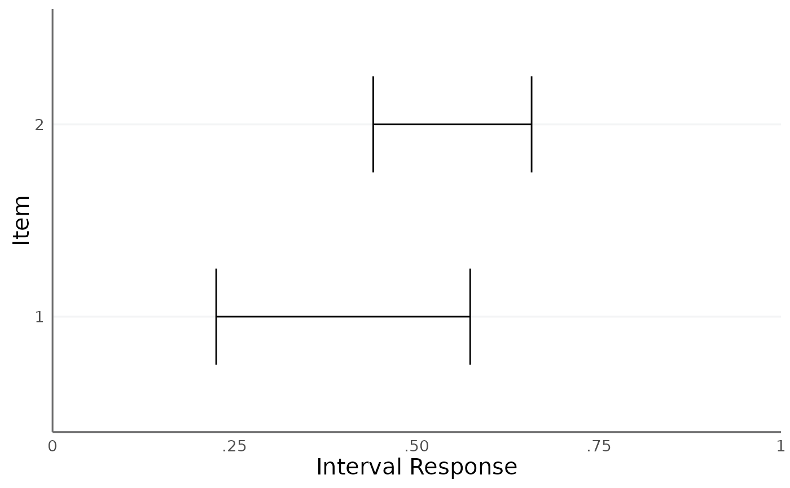

Plot consensus intervals estimated by the Interval Consensus Model (ICM) via
fit_icm().
Arguments
- icm_stanfit
An object of class
icm_stanfitcontaining the Stanfit results.- method
A character string specifying the plotting method. Options are "median_bounds" (default) or "draws_distribution".
- CI
A numeric value specifying the confidence interval for the "draws_distribution" method. Default is 0.95. This can also be a vector of length 2 for multiple confidence intervals.
Details
If the method is "median_bounds", the function uses posterior medians for the lower and upper bounds of the consensus intervals.
If the method is "draws_distribution", the function computes a consensus distribution for each consensus interval by uniformly sampling one value from the interval range for each posterior draw. From this distribution, a density plot is generated. As a rough guideline, the number of draws for this method should be above 1000.
Examples
# \donttest{
# Create minimal example data
df_simplex <- data.frame(
x1 = c(0.3, 0.4, 0.2, 0.5),
x2 = c(0.3, 0.2, 0.4, 0.2),
x3 = c(0.4, 0.4, 0.4, 0.3)
)
id_person <- c(1, 1, 2, 2)
id_item <- c(1, 2, 1, 2)
# Fit ICM model
fit <- fit_icm(df_simplex, id_person, id_item, n_chains = 1,
iter_sampling = 100, iter_warmup = 100,
refresh = 0)
#> Warning: There were 8 divergent transitions after warmup. See
#> https://mc-stan.org/misc/warnings.html#divergent-transitions-after-warmup
#> to find out why this is a problem and how to eliminate them.
#> Warning: Examine the pairs() plot to diagnose sampling problems
#> Warning: The largest R-hat is 1.13, indicating chains have not mixed.
#> Running the chains for more iterations may help. See
#> https://mc-stan.org/misc/warnings.html#r-hat
#> Warning: Bulk Effective Samples Size (ESS) is too low, indicating posterior means and medians may be unreliable.
#> Running the chains for more iterations may help. See
#> https://mc-stan.org/misc/warnings.html#bulk-ess
#> Warning: Tail Effective Samples Size (ESS) is too low, indicating posterior variances and tail quantiles may be unreliable.
#> Running the chains for more iterations may help. See
#> https://mc-stan.org/misc/warnings.html#tail-ess
# Plot consensus intervals using median bounds
plot_consensus(fit, method = "median_bounds")

# }